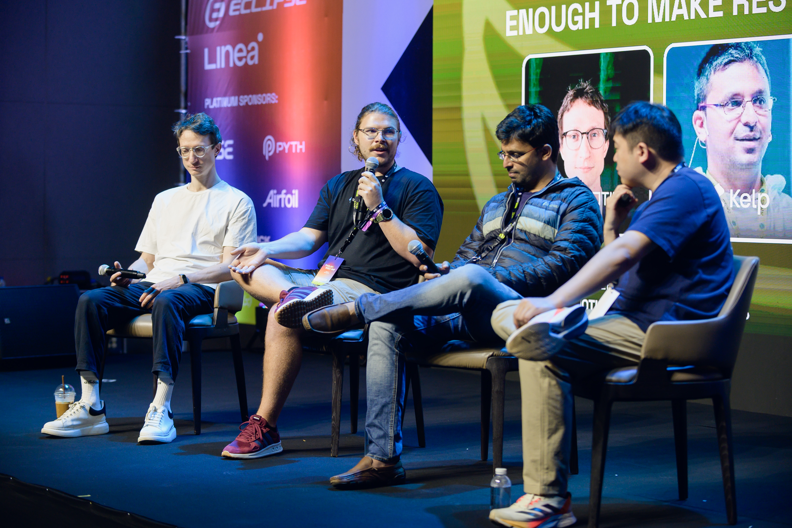

Robert Drage
Product Marketing Manager
Crypto-native PMM with 5 years in Web3 marketing/PR and 2+ years leading GTM. Led Product marketing efforts at SSV Network during its rise from mainnet launch to reaching ~$20B TVL. I've executed campaigns with 50+ ecosystem partners and taken the stage at many offline and online events.

Skills
Research & CI
AI-assisted market and competitor research flow into data driven decision making.
Messaging & Positioning
Transforming complex technology into clear messaging that supports the full product lifecycle.
GTM Strategy
Blend Go-To-Market plan and strategic communications to drive adoption.
Enablement & Distribution
Develop enablement collateral paired with multi-channel distribution strategies that drive leads and conversions.
Ecosystem Growth
Leading multi-partner GTM rollouts to build awareness and support adoption.
Performance Measuring & Collaboration
Use on/offchain data to measure and track conversions & KPIs, develop insights to inform the strategy, then iterate.
Launches
SSV Staking + Retail Incentivization
Problem: Need to educate and align various audiences (retail, node operators, partners) around a new staking product.
Strategy: Led comprehensive research, positioning, and tailored messaging efforts for each key audience segment.
Results: Existing operators successfully onboarded with resources, partners aligned, retail interest piqued with testnet campaign.
Read More →Simple DVT with Lido
Problem: Introducing a new DVT staking module along with another DVT provider.
Strategy: Strong positioning to capture net new node operators, optimize onboarding, regular performance and TVL updates. Worked with 2 teams from testnet till past mainnet.
Results: Vault reached capacity within 3 months of launch and maintained steady inflows.
Compose.network
Problem: Expanding SSV's narrative beyond distributed staking to tackle L2 interoperability.
Strategy: Framed fragmentation as Ethereum's core challenge and positioned Compose as the premier interoperability infrastructure secured by SSV validators and ZK.
Action: Delivered compelling business-value storytelling to broader Web3 audiences.
SSV 2.0 – Based Applications Protocol
Problem: Educating the market on modular, developer-first infrastructure for dApps.
Action: Co-wrote whitepaper and coordinated PR and GTM efforts across the ecosystem. Collaboration with BD to enable them to generate leads.
Results: Drove 4M+ views on tier 1 crypto publications and onbaorded 5 teams to start building.
Read Announcement →SSV Network Mainnet Launch
Led and executed the multi-phase content strategy for the SSV Network's mainnet rollout coordinating partner marketing and PR efforts with 25+ partners. Supporting the TVL expansion to from $0 to $1B TVL in the first 3 months of going live.
PR & Media Coverage
| Publication | Feature | Focus | Est. Views |
|---|---|---|---|
| CoinTelegraph et al. | SSV 2.0 Framework Announcement | Product Launch | ±4M |
| CoinTelegraph et al. | SSVLM Permissionless staking with Lido | Lido <> SSV Integration | ±1.5M |
| Blockworks et al. | Kraken integrates DVT for ETH staking | Partner Integration | ±1M |
| The Defiant et al. | SSV Hits $1B TVL | Milestone Announcement | ±300k |
| Nasdaq | Decentralizing Staking & Restaking | Founder Interview | ±21k |
Thought Leadership & Ecosystem

Supporting Founder-led Marketing
- ETHDenver 2025
- Token 2049
- ETHCC & ETHPrague
- Staking Summit
- Podcasts: The Defiant, Blockhash
Ecosystem Contributions
- Ethereum.org: Authored the core "What is DVT?" educational page.
- CoinMarketCap: Wrote the "Defining DVT" glossary explainer.
- Education & Advocacy: Hosted and participated in over 50+ online events with companies across the ethereum staking space and beyond.
Community Spotlight